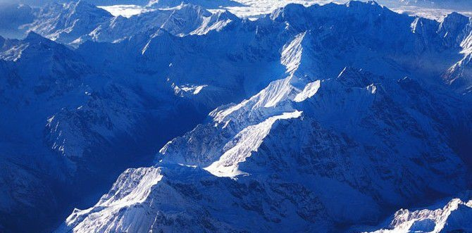

地理位置
地理位置
横断山脉（群）位于中国地势第二级阶梯与第一级阶梯交界处，是中
国第一﹑第二阶梯的分界线。为中国四川、云南两省西部和西藏自治区东部一系列南北向平行山脉的总称。山岭海拔多在4000~5000米，
岭谷高差一般在1000~2000米以上。平均海拔4000米以上。山高谷深，横断东西间交通，故名。山岭自西而东包括米什米山（西方是雅
鲁藏布江及喜马拉雅山脉，与喜马拉雅山交会于南迦巴瓦峰）、丹巴曲（在藏南地区东部）、岗日嘎布山（及其西南支）、察隅河、伯舒拉岭
--高黎贡山等。
形成历史
横断山脉地区在历史上是所谓的西南夷所在之地。
《后汉书》中说“西南夷者，在蜀郡徼外。有夜郎国（今贵州西部和云南东北部），东接交趾（今越南），
西有滇国（今云南昆明一带），北有邛都国（今四川西昌一带），各立君长。其人皆椎结左衽，邑聚而居，能
耕田。其外又有、昆明诸落，西极同师（今思茅一带），东北至叶榆（今大理地区），地方数千里。无君长，
辫发，随畜迁徙无常。自东北有都国（今大渡河中下游四川泸定、汉源一带），东北有冉国（今四川西北部嘉绒
藏族地区），或土著，或随畜迁徙。自冉东北有白马国（今四川西北、甘肃南部的平武、迭布一带），氐种是也
。此三国亦有君长。”夷，是古代对中原以外的异族的一种称谓，也有封闭的意思。汉代西南夷的地域很广大，主
要包括今贵州、云南的大部分地区和四川的西部、西北部地区。这里部落众多，族属复杂，有的从事农耕，有
以游牧为生，语言和风俗不同。其中主要有夜郎、滇、邛都、昆明、徙、都、冉、白马等大的部族（即所谓的“国
”）。这些部落各有自己的首领（君长）。西南夷这一名称最早出现于司马迁所撰的《史记》，源于历史上著名的“
汉武开西南夷”事件。《史记》中“西南夷列传”记载了汉武帝为了打通“蜀身毒道”（从巴蜀经滇至印度之路，即今
天所说的“南方丝绸之路”）和南越道（从巴蜀经夜郎至越南之路）而派兵招抚了这些部国，建立了7个郡的史载，
能知晓西南夷的大致面貌.
地貌特征

在北纬25°~29°40′之间基本上是南北走向，北纬29°40′以北向西北展开，
北纬25°以南向东南撒开。总地势北高南低，高于5000米的山峰多有雪峰、冰川。位于北纬27°10′的玉龙雪
山海拔5596米，为中国纬度最南的现代冰川分布区。
横断山脉由于走向特殊、地理位置特殊，它在地理、地质、生物、水文等诸多科学领域有重要意义。
横断山脉成为印度洋的暖湿气流进入中国的通道，印度洋的暖湿气流被喜马拉雅山脉和冈底斯山脉两
条东西向的高大山脉所阻挡，沿南北走向的横断山脉进入中国，给青藏高原东南地区带来丰沛雨水，进
而对这里冰川发育、植物分布有重大影响。由于横断山脉的形成过程是逐渐由近东西走向变为近南北走向
的，使这里的生物逐渐进化出非常特殊的适应性，成为动物、植物学研究的热点地区。另外由于横断山
脉的交通困难，许多地方很少受外来影响，保存了许多少数民族独特文化和未被破坏的自然景观！